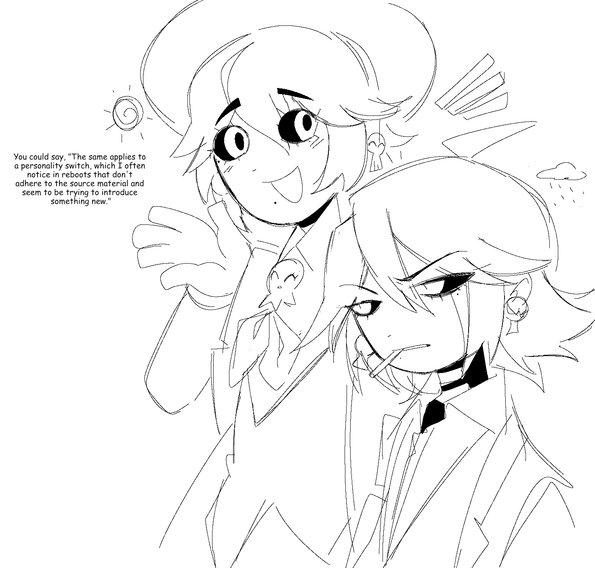

Skull diary, the death diary, talking here about ideas, post doodles vents and thought, be warned can get sugestive at times, but nothing explicitly nsfw, just teenage banter
I deleted an huge archive of drawings that are not canon anymore, i will have to ask of you not to repost them, trough this diary i will go over all the Character designs and doodles that i have made and maybe explain some plans that i had or did for those. and while you might have already seen them i would still like to show what are still canon, need to say that everything that you see still on the website is canon!!



Now, how do I start? I find myself worrying about myself and my depression. It's getting better. I will be deleting the vent on Twitter once the website is out. I want to enjoy life again. Hoping and praying everything will turn out well.